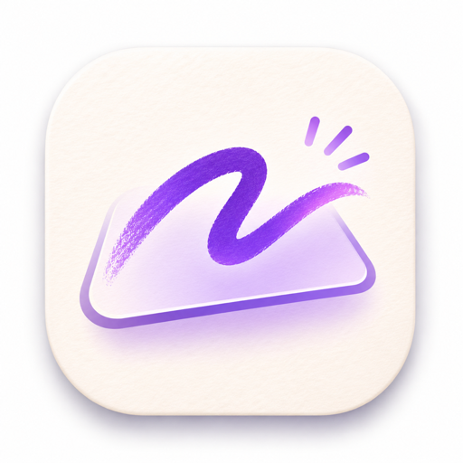
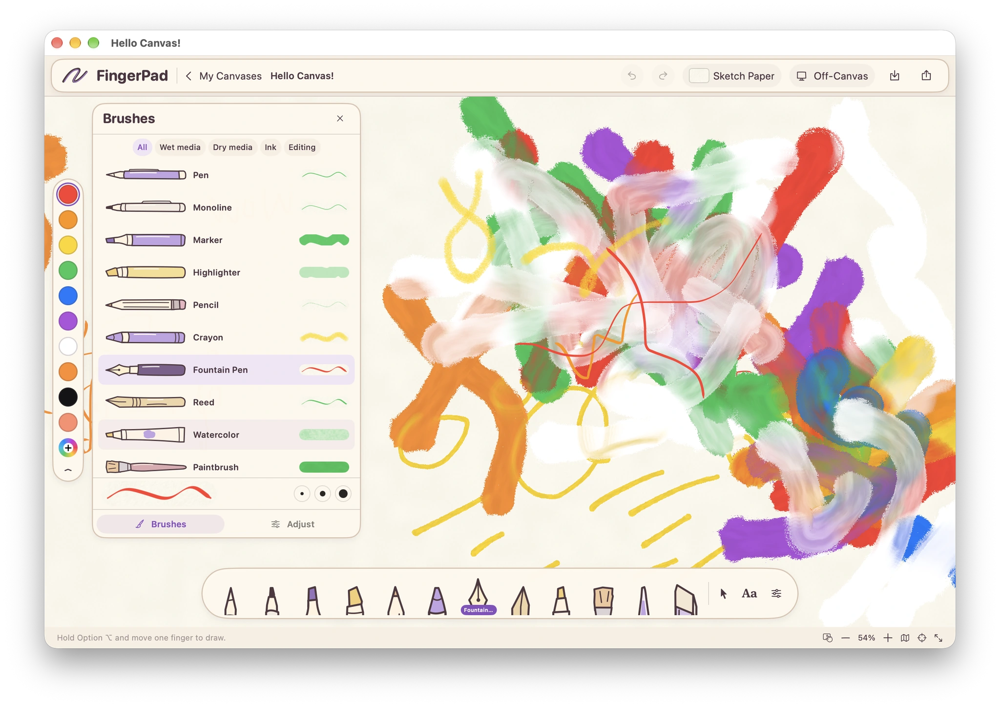
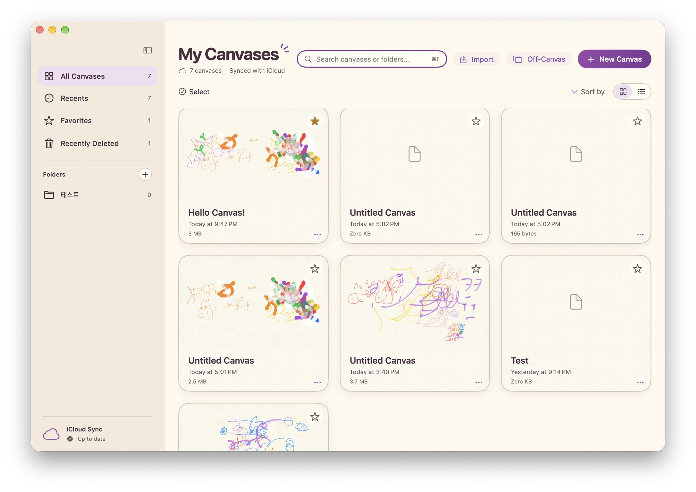

FingerPad
Pen-quality annotations. With just your trackpad. Sketch an idea, map out a lesson, or mark up the app you’re showing with a finger on your Mac trackpad.

Inside the app
Draw with one finger
Hold the drawing modifier and move a finger across your trackpad to lay down ink.
Find the right stroke
Open Brushes to compare stroke samples for pens, markers, crayons, and watercolor. Pick a color from the rail beside your canvas and switch instruments from the shelf below.
Move between a canvas and the screen
Sketch on an editable canvas, or switch to onscreen ink when you want to mark something in another app.
From sketch to lesson
I designed FingerPad and TeacherPalette to work well together. Sketch a diagram in FingerPad before class. When you share the canvas, use TeacherPalette’s spotlight to guide the audience through it one detail at a time.

